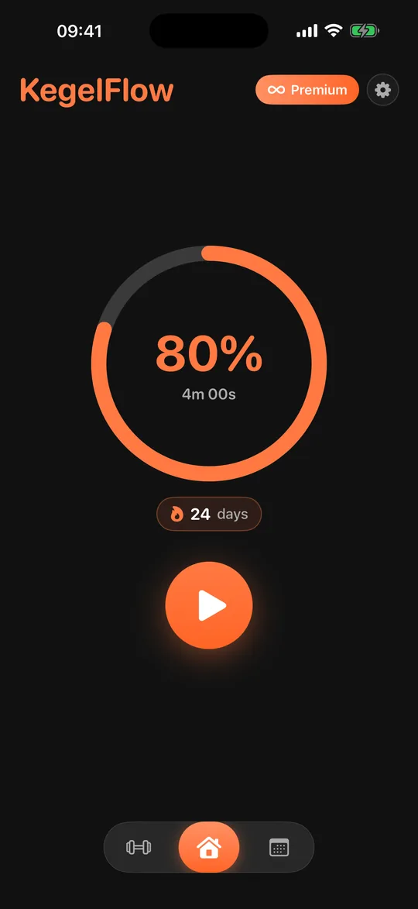
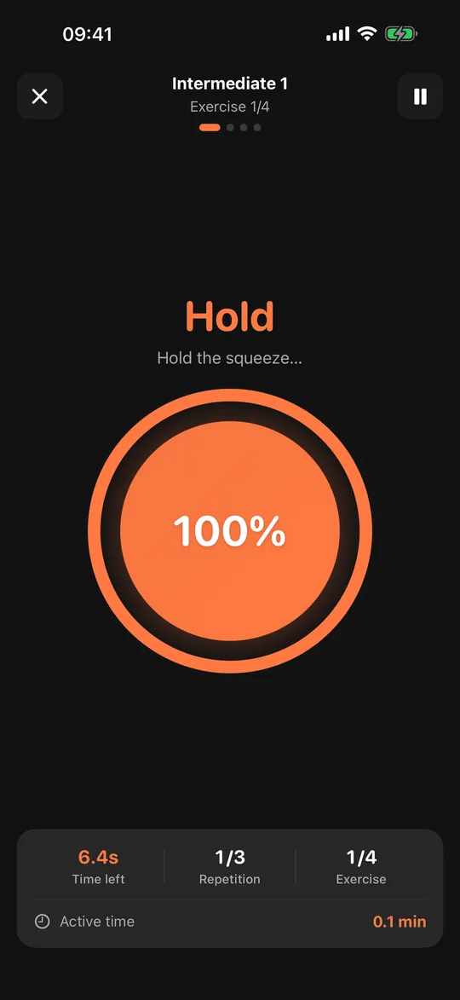
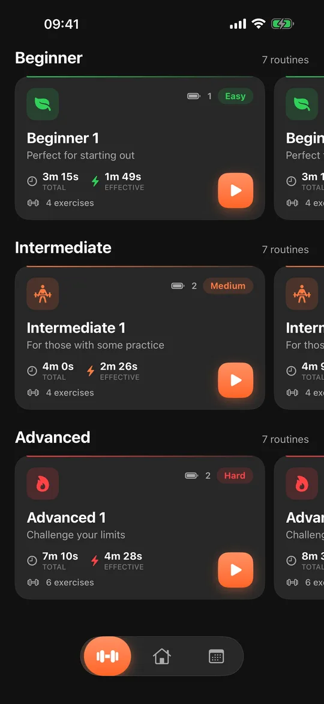
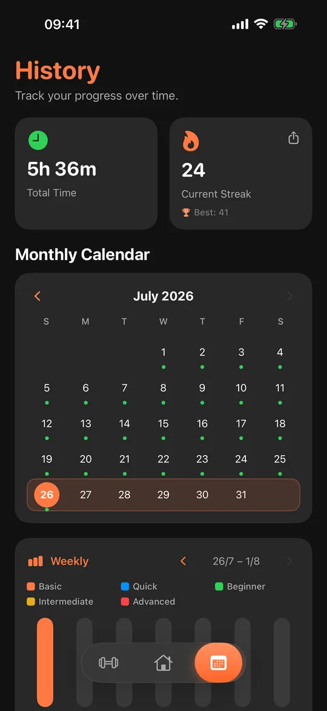
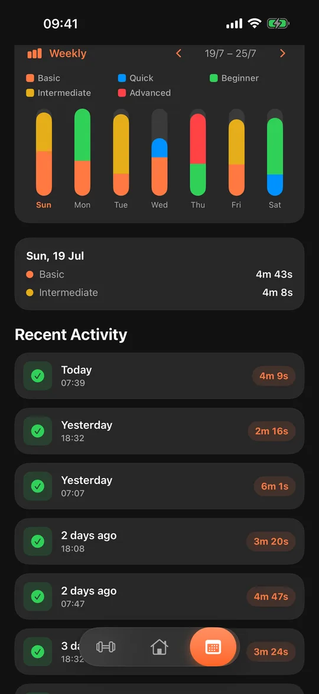
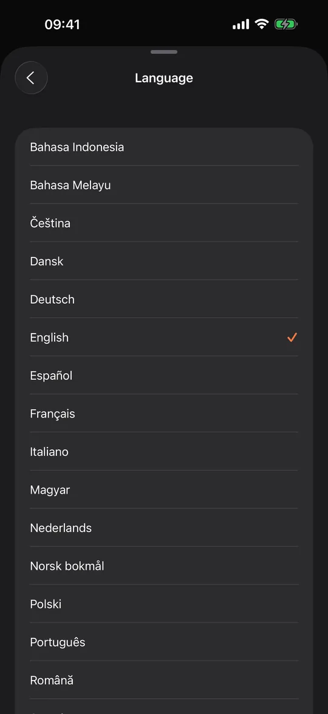
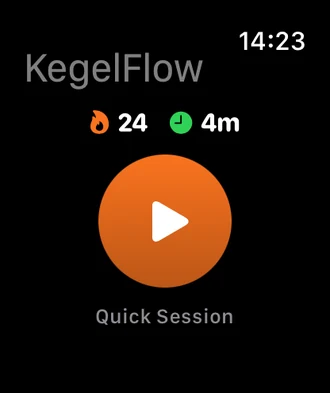
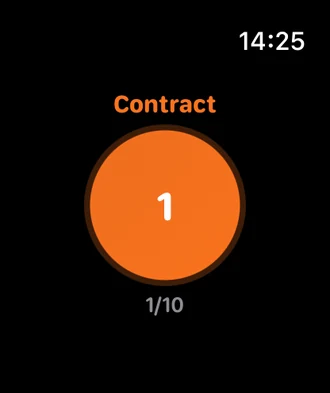

Na App Store · v2.0.0 On the App Store · v2.0.0
KegelFlow
Treinador de assoalho pélvico guiado. Cinco minutos por dia. A guided pelvic floor trainer. Five minutes a day.
O KegelFlow já existia na App Store, escrito em Flutter, com usuários ativos e pagantes. A versão 2.0 é uma reescrita completa em Swift e SwiftUI — mas precisava sair sob o mesmo Bundle ID, na mesma listagem, e quem abrisse a atualização tinha que encontrar tudo exatamente onde deixou. KegelFlow was already on the App Store, written in Flutter, with active — and paying — users. Version 2.0 is a full rewrite in Swift and SwiftUI, but it had to ship under the same Bundle ID, into the same listing, and anyone opening the update had to find everything exactly where they left it.
Não existe passo de migração: os dados simplesmente já estão lá na primeira abertura. There is no migration step: the data is simply already there on first launch.
O plugin do Flutter gravava tudo em UserDefaults, prefixando cada chave com flutter. — em vez de escrever uma rotina de migração, que roda uma vez, pode falhar uma vez e falha calada, o app Swift passou a ler e gravar exatamente essas chaves, com o prefixo mantido para sempre. A assinatura veio junto de graça: mesmo Bundle ID e mesmos product IDs, e o StoreKit 2 reconhece o assinante antigo sozinho.
The Flutter plugin stored everything in UserDefaults, prefixing every key with flutter. — instead of writing a migration routine, which runs once, can fail once, and fails silently, the Swift app reads and writes those exact keys, prefix kept forever. The subscription came along for free: same Bundle ID and same product IDs, so StoreKit 2 recognises the existing subscriber on its own.
A 2.0 ainda trouxe um app de Apple Watch que executa as rotinas reais guiadas por hápticos, widget de tela de início, Live Activity, Apple Health, Siri e iCloud — e saltou de 8 para 30 idiomas, incluindo árabe com o layout inteiro espelhado. 2.0 also added an Apple Watch app that runs the real routines led by haptics, a Home Screen widget, Live Activity, Apple Health, Siri and iCloud — and took the app from 8 to 30 languages, including Arabic with the whole layout mirrored.
- PlataformasPlatforms
- iPhone · iPad · Watch
- CategoriaCategory
- Health & Fitness
- IdiomasLanguages
- 30
- Linhas de SwiftLines of Swift
- ~12.100
- TestesTests
- 281 + 67 UI
- ExercíciosExercises
- 45 em 23 rotinas45 in 23 routines
- iOS mínimoMinimum iOS
- 16.0 · 10,2 MB







